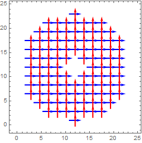

| ANALYSIS` SYMBOL |
JonesPupil
|
JonesImage[input_ , opts___] is intended for the generation of Jones pupil maps. The function is not restricted to generating a Jones Matrix grids at pupil locations. Mode label descriptions are used to separate multiple wavefronts. There are three inputs to the function --------------------------------- JonesPupil[{rayData, opticalSystem, pupilRadius}, opts___ ] INPUT 1: Create a Jones Pupil from an image location. This input should be used when there is a well defined image location in the optical system and ray data. The Jones Pupil will be created at at the exit pupil location. input = {rayData, opticalSystem, pupilRadius} rayData - output from a polarization ray trace (the TraceRays[] function). A {n,29} array of ray paths. opticalSystem - {n,11} dimensional array of the optical surfaces used to create the rayData. pupilRadius - distance from the imaging surface to the exit pupil location. *with negative radius being to the left of the image surface -------------------------------- JonesPupil[{rayData, opticalSystem}, opts___ ] INPUT 2: Create a Jones Pupil from a surface in the optical system. input = {rayData, opticalSystem} rayData - output from a polarization ray trace (the TraceRays[] function). A {n,29} array of ray paths. opticalSystem - {n,11} dimensional array of the optical surfaces used to create the rayData. *the option Opts`SurfaceID can be used to identify the optical surface ID to create the jones pupil. the default surface is the last surface in the optical system -------------------------------- JonesPupil[{rayData, selected}, opts___ ] INPUT 3: Create a Jones Pupil from a ray data. The ray data must a collection of ray paths with the same ray`surfID values. input = {rayData, selected} rayData- output from a polarization ray trace (the TraceRays[] function). selected - A {n,29} array of ray paths. *all rays must be at the same surface. -------------------------------- OUTPUT: {jonesPupil, localXPupil, localYPupil} jonesPupil - {JonesMatrices,spacing, center,axes, λ} the Jones Pupil data structure. JonesMatrices - {n, m, 2, 2} dimensional array, where {n, m} is the diemensionality of the original ray grid spacing - average grid spacing of the JonesMatrices in [mm]. center - the center location of the Jones Pupil in global coordinates {x, y, z} in [mm]. axes - the direction of the wavefront normal at the center location. λ - the wavelength of the Jones Pupil in [μm]. localXBasis - an array of local x vectors with dimensions {n,m,3} *this is the basis used to convert the PRT matricies into a Jones Matrix localYBasis - an array of local y vectors with dimensions {n,m,3} *this is the basis used to convert the PRT matricies into a Jones Matrix |

Custom Options
| Opts`SurfaceID | -1 | A positive integer, the surface ID value of the pupil surface | |
| Opts`InitialGridDimensions | Rectangular | The grid type of the input rays, either Rectangular orPolar. | |
| Opts`CoordinateSystem | DoublePole | The coordiantes system for the global to local conversion: DoublePole or Dipole | |
| Opts`CoordinateAxis | Automatic | The direction of the CoordinateSystem pole axis in global coordinates {x,y,z} | |
| Opts`XLocal | Full | The x-axis direction to use for the global to local conversion * only used for “DoublePole” coordinate system |

The examples will show three different ways the Jones pupil of the above system can be calculated.
Input 1 (1)
This example will create a Jones Pupil from the exit pupil of the optical system.

Now the Jones Pupil will be calculated.
The local basis can be plotted with ListVectorPlot.
And the Pupil can be plotted with JonesPlot.


Input 2 (1)
This example will plot the Jones Grid at the surface 2 location. Unlike the first example, this pupil will only contain surface effects for the first 2 surfaces


Now the Jones Pupil will be calculated at surface 2. This is the effect of the primary mirror
The local basis can be plotted with ListVectorPlot.
And the Pupil can be plotted with JonesPlot.


Input 3 (1)
This example will plot the Jones Grid at the surface 1 location. Unlike the first example, and second example, rays will be manually selected

Now the Jones Pupil will be calculated at surface 3. This is the combined effect of the secondary mirror and primary mirror.
The local basis can be plotted with ListVectorPlot.


And the Pupil can be plotted with JonesPlot.


 •
•  •
•  •
•  •
•